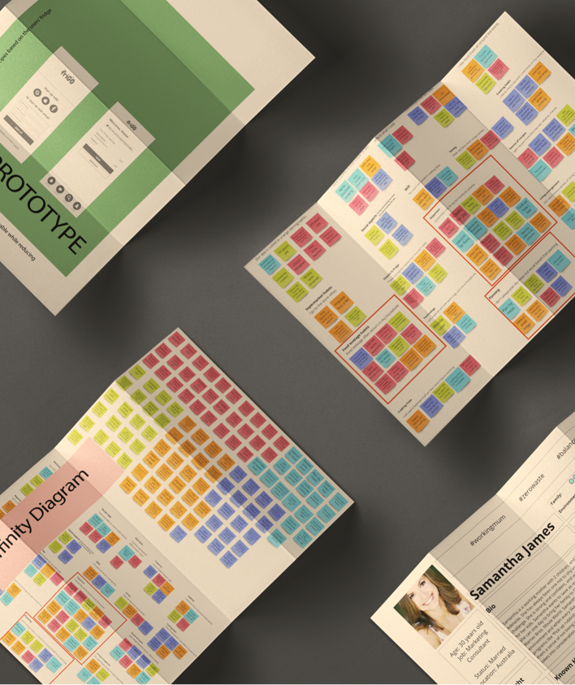
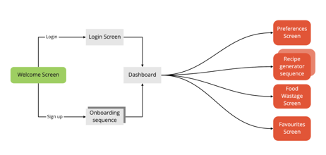
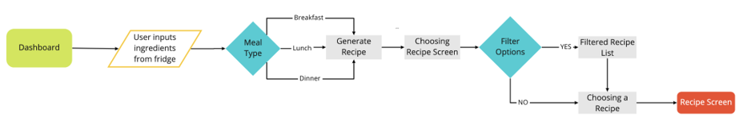

Project
PROJECT Mobile App Case Study FriGO generates recipes based on the users’ fridge ingredients.
Problem Statement
FriGO’s mission is to make home cooking more enjoyable while reducing food wastage.
TEAM Emma | Gary | Sissy
- UX UI Skills
User Research
Research Questions:
How can we help our users decrease household food wastage?
Results from Interviews:
Often wastes vegetables, milk and bread
Always throws things away each week
Don't like to waste food
Competitor Analysis:
Mealime
Strengths: Personalised meal plan feature built-in
Weakness: No option to share your own recipes
I like...
Using filters to choose my recipes
Recipes that match my capabilities
I wish...
I could add notes to the recipes
I could see calories for the recipes
What if...
I could sort recipes by dietary needs
There are recipes with flexible ingredients
FriGo

User Flow

Usability Test

Iteration